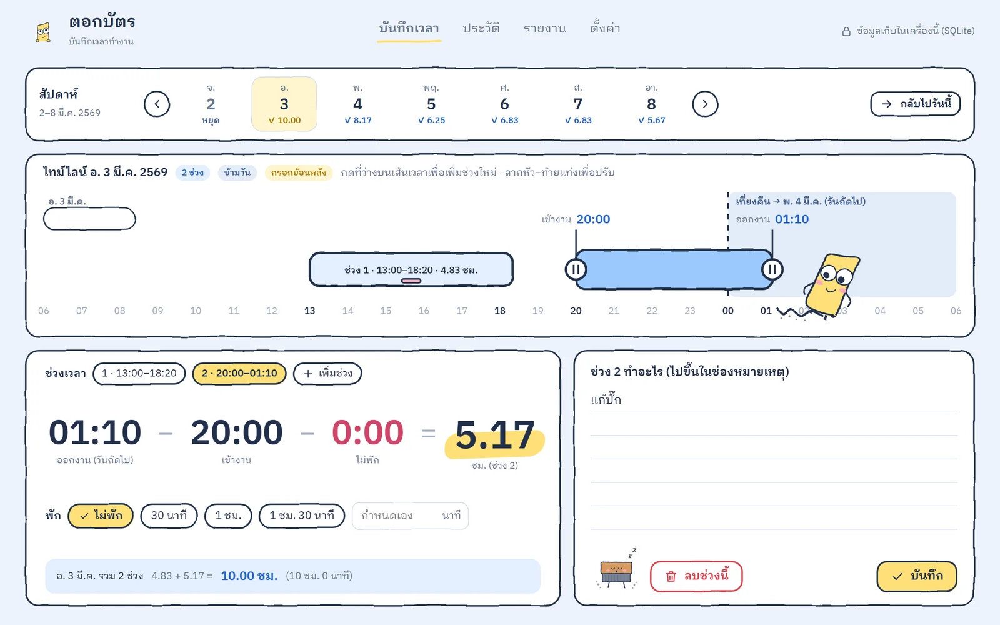
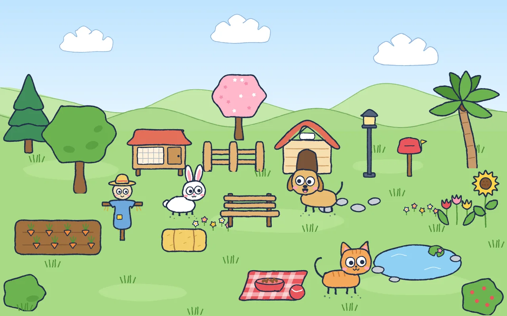
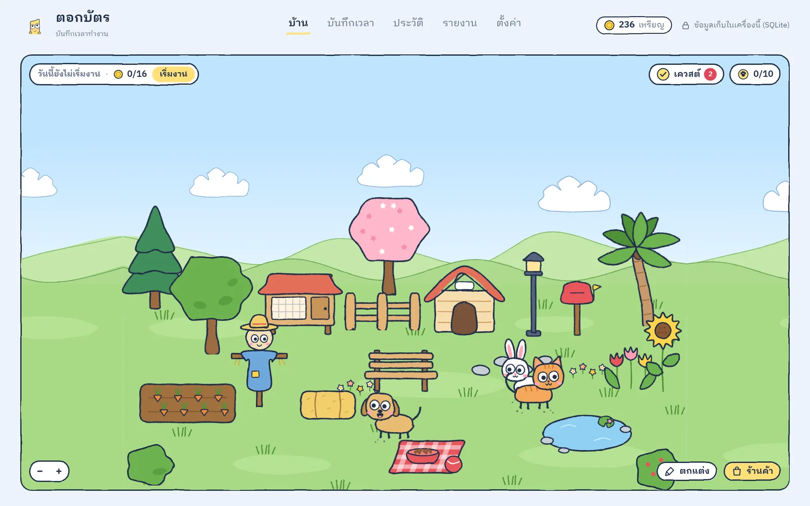
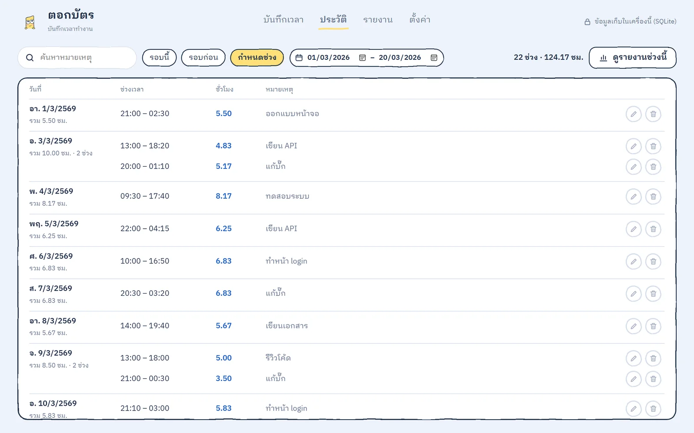
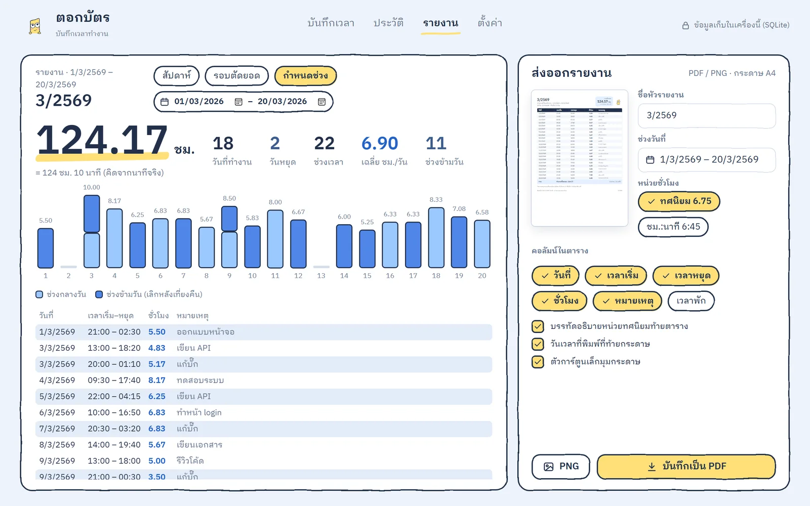
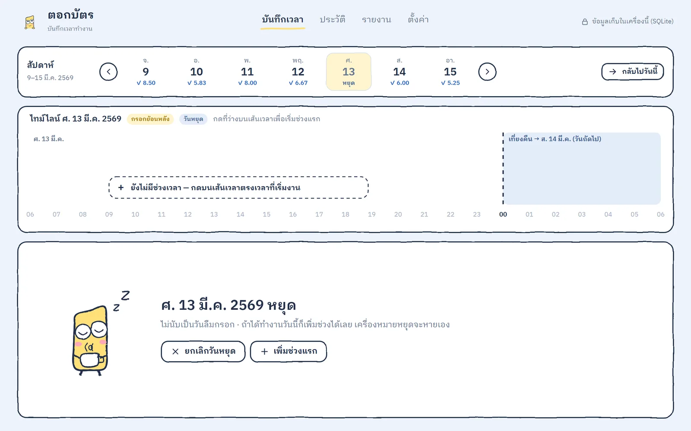

ทำงานข้ามเที่ยงคืน นับเป็นวันไหน?
นับเป็นของวันที่เริ่มงาน เช่น เข้า 22:00 วันจันทร์ ออก 03:00 ชั่วโมงทั้งหมดเป็นของวันจันทร์
แอป Windows · ฟรี · ไม่ต้องต่อเน็ต
กรอกเวลาเข้า–ออก หักเวลาพักให้เอง แล้วส่งออกรายงาน A4 เป็น PDF หรือ PNG หน้าตาเหมือนชีตที่ใช้อยู่ ไม่ต้องสมัคร ไม่ต้องต่อเน็ต ข้อมูลอยู่ในเครื่องคุณเท่านั้น

ทำงานข้ามเที่ยงคืน
22:00 → 03:00
= 5.00 ชม. นับเป็นของวันที่เริ่มงาน
ทำอะไรได้
ลากหัว–ท้ายแท่งบนเส้นเวลา 24 ชม. หรือพิมพ์ 08:03 ได้ตรงนาที
เข้า 22:00 ออก 03:00 ก็นับถูก ชั่วโมงเป็นของวันที่เริ่มงาน
บ่ายหนึ่งช่วง ดึกอีกช่วง แอปรวมยอดทั้งวันให้เอง
เลือก 30 นาที 1 ชม. หรือกำหนดเอง ยอดสุทธิขึ้นทันที
เตือนวันที่ยังว่าง กรอกย้อนหลังได้ทุกวัน และกดเป็นวันหยุดได้
ตัดทุกวันที่ 20 หรือรายเดือน หัวรายงานตั้งชื่อเป็น เดือน/ปี ให้เอง
ใหม่ · สวนสัตว์เลี้ยง
เปิดแท็บ “บ้าน” เจอลานหญ้าที่มีแมว หมา กระต่าย กบ นก เป็ด เล่นกันอยู่ ยิ่งจับเวลาทำงาน ก็ยิ่งได้ของมาแต่งลาน

ตัวอย่าง · เล่นจริงในแอป
ไม่ใช้เงินจริง · ไม่ต้องต่อเน็ต · ปิดได้ในตั้งค่า
รายงาน
เลือกช่วงวันที่หรือรอบตัดยอด แล้วกดบันทึกเป็น PDF หรือ PNG ส่งต่อได้ทันที
หน้าตาในแอป
ทุกหน้าคุยภาษาเดียวกับชีตเวลา มีตัวการ์ตูนคอยบอกว่าตอนนี้เกิดอะไรขึ้น




ข้อมูลของคุณ
เปิดแอปแล้วใช้ได้เลย ไม่มีใครเห็นเวลาของคุณ
ใช้ได้แม้ไม่มีเน็ต ต่อเน็ตแค่เช็กอัปเดตกับของใหม่ ซึ่งปิดได้
Documents\ตอกบัตร\worktime.db สำรองและกู้คืนได้จากหน้าตั้งค่า
ติดตั้งใหม่เมื่อไหร่ก็ใช้ต่อได้ทันที
ติดตั้ง
ไฟล์ .exe ขนาด 6.1 MB จาก หน้า GitHub Releases
ไม่ต้องใช้สิทธิ์แอดมิน ติดตั้งให้ผู้ใช้คนเดียว
มีเวลาในชีตอยู่แล้ว? นำเข้าจาก Google Sheets (CSV) ได้เลย
ติดตั้งครั้งเดียวพอ ตั้งแต่ 0.3.0 แอปเช็กเวอร์ชันใหม่ให้เอง และถามก่อนติดตั้งทุกครั้ง
ดาวน์โหลดสำหรับ Windowsคำถามที่พบบ่อย
นับเป็นของวันที่เริ่มงาน เช่น เข้า 22:00 วันจันทร์ ออก 03:00 ชั่วโมงทั้งหมดเป็นของวันจันทร์
ไม่หาย ไฟล์ข้อมูลอยู่ใน Documents\ตอกบัตร ติดตั้งใหม่ก็ใช้ต่อได้เลย
ได้ ดาวน์โหลดชีตเป็น CSV แล้วกดนำเข้าในหน้าตั้งค่า แถวที่ซ้ำจะถูกข้ามให้
ตอนนี้มีเฉพาะ Windows 10 และ 11
ไม่เปลี่ยน เหรียญ สัตว์ และของแต่งไม่ไปอยู่ในรายงานหรือไฟล์ส่งออก เวลาที่บันทึกยังเหมือนเดิมทุกนาที
ได้ ปิดที่ ตั้งค่า › สวนสัตว์เลี้ยง แอปจะเปิดมาที่หน้าบันทึกเวลาเหมือนเดิม ของที่สะสมไว้ยังอยู่